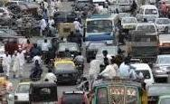
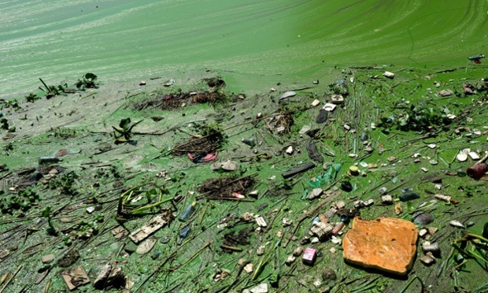
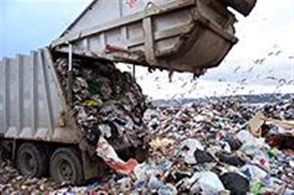
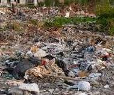
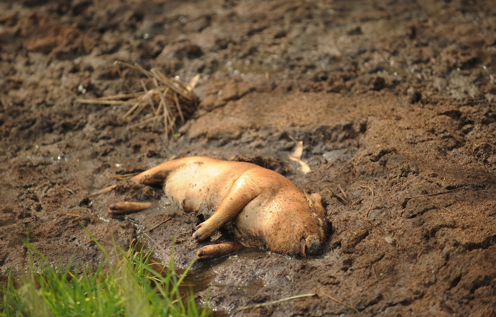
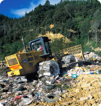
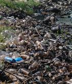

|        | ||
|
Project Water pollution Air Pollution Soil Pollution Sound Pollution |
SOIL POLLUTION & SOIL POLLUTION CONTROL
Soil pollution is defined as the build-up in soils of persistent toxic compounds, chemicals, salts, radioactive materials, or disease causing agents, which have adverse effects on plant growth and animal health. Soil is the thin layer of organic and inorganic materials that covers the Earth's rocky surface. The organic portion, which is derived from the decayed remains of plants and animals, is concentrated in the dark uppermost topsoil. The inorganic portion made up of rock fragments, was formed over thousands of years by physical and chemical weathering of bedrock. Productive soils are necessary for agriculture to supply the world with sufficient food. Soil Erosion occurs when the weathered soil particles are dislodged and carried away by wind or water. Deforestation, agricultural development, temperature extremes, precipitation including acid rain, and human activities contribute to this erosion. Humans speed up this process by construction, mining, cutting of timber, over cropping and overgrazing. It results in floods and cause soil erosion. Causes in brief: • Polluted water discharged from factories • Runoff from pollutants (paint, chemicals, rotting organic material) leaching out of landfill • Oil and petroleum leaks from vehicles washed off the road by the rain into the surrounding habitat • Chemical fertilizer runoff from farms and crops. • Acid rain (fumes from factories mixing with rain). • Sewage discharged into rivers instead of being treated properly. • Over application of pesticides and fertilizers. • Purposeful injection into groundwater as a disposal method. | |